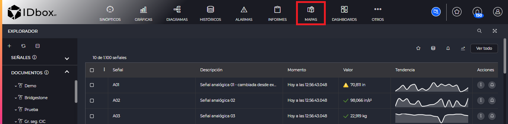
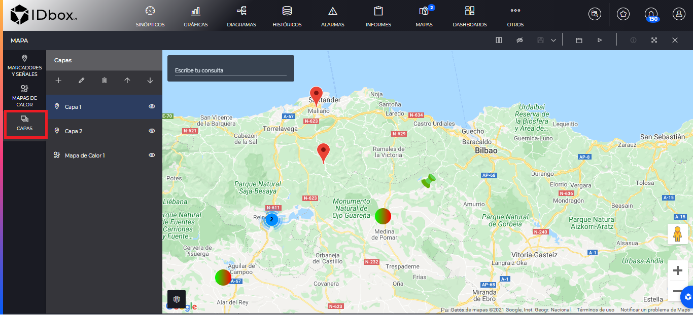
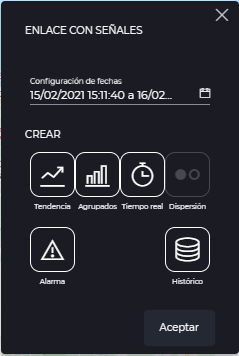
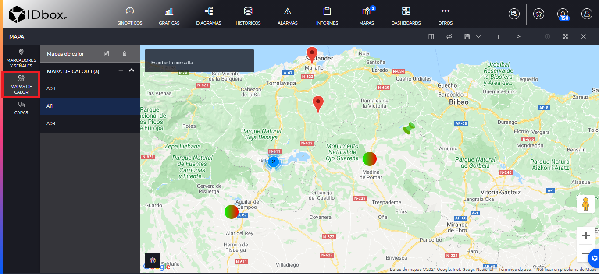
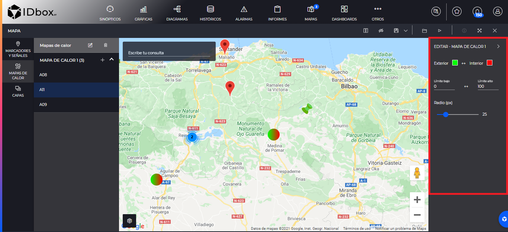

MAPAS
- 1 Introducción
- 2 Editor
- 2.1 Gestión de capas
- 2.2 Marcadores y señales
- 2.3 Mapas de calor
- 3 Visor
- 4 Opciones de visualización
1. Introducción
Los mapas nos permitirán visualizar marcadores con señales o mapas de calor que estén posicionados geográficamente.
Se pueden crear desde la sección de accesos directos. Al pulsar en esta opción se nos abrirá un nuevo mapa.

2 Editor
El editor de mapas nos permitirá crear el documento a nuestra medida, dando de alta capas que contendrán marcadores con señales, mapas de calor o kmls.
Una vez terminemos de hacer todos los cambios sobre el mapa podremos guardarle pulsando sobre el botón de guardar de la barra de herramientas
2.1 Gestión de capas
Las capas nos permitirán organizar nuestros marcarcadores o mapas de calor para que los puntos del mapa estén agrupados. Además nos permitirá inyectar en el mapa ficheros de tipo kml.
Para acceder la gestión de capas pulsaremos en el menú lateral izquierdo en “Capas”.

Aquí se nos listarán las capas que tenemos disponibles en este mapa. Cada una de las capas a la derecha tiene el botón de . Si pulsamos en él, nos ocultará todos los elementos de esa capa en el mapa y nos cambiará el icono a . Si pulsamos nuevamente en este icono, nos mostrará los elementos de la capa en el mapa.
Por otro lado tenemos las siguientes funcionalidades:
- Añadir capa: Nos permitirá añadir capas. Nos abrirá una venta auxiliar en el que introduciremos el nombre de la capa y su tipo. En el caso de querer añadir un fichero kml al mapa tendremos que seleccionar ese fichero de nuestro sistema.
- Editar capa: Nos permitirá renombrar la capa que tenemos seleccionada.
- Borrar capa: Nos permitirá eliminar la capa seleccionada. Si esta tuviera elementos nos saldrá un mensaje de advertencia para confirmar que borraremos todos los elementos de la capa con ella.
- Los botones de subir capa y bajar capa, nos permitirán reordenar las capas en la lista.
2.2 Marcadores y señales
Entraremos a la sección “Marcadores y Señales” pulsando en el panel izquierdo en la misma.

Aquí se listarán todas las capas visibles que sean de tipo “Marcadores y Señales”.
Podremos añadir un nuevo marcador con el botón “Nuevo Marcador” de la capa a la que queramos añadirle. El marcador estará geoposicionado en el centro que tengamos el mapa actualmente. Una vez dado de alta podríamos arrastrar el marcador a otra geoposición distinta.
El botón “Nueva Señal” , nos abrirá el selector de señales, para que podamos seleccionar una o varias señales. Esto añadirá uno o varios marcadores, cada uno con una señal ya geoposicionada y mostrando su tiempo real. Por tanto la geoposición de estos marcadores vendrá dado por la geoposición de la señal. Si la señal nunca ha sido geoposicionada en ningún mapa, al guardar este mapa será cuando se asigne la geoposición de la señal. Si se arrastra una señal a otra geoposición, esa será su geoposición en todos los mapas, cuando guardemos este mapa.
Podemos seleccionar un marcador pulsando sobre el mismo. Esto nos centrará el mapa en ese marcador concreto.
Si los marcadores están muy juntos se agruparán automáticamente en un punto y tendremos que hacer zoom si queremos verles (si están exactamente en la misma latitud y longitud, tendremos que mover uno antes de dar de alta el siguiente).
Podremos eliminar un marcador específico seleccionando un marcador y pulsando en el botón de eliminar.
Una vez dado de alta el marcador podremos editarle mediante en el botón de editar.
Al editar un marcador nos saldrá el siguiente panel derecho

Las opciones del marcador son:
- Señal Geoposicionada: Indica la señal que geoposiciona al marcador en el mapa.
- Título: Título del marcador.
- Descripción: Para escribir anotaciones sobre este marcador
- Enlace a documento: Nos permitirá tener enlaces a documentos existentes en el marcador. Nos abrirá el selector de documentos para seleccionar el documento.
- Enlace con señales: Los enlaces con señales que se creen en un marcador irán asociados a las señales de tiempo real que se establezcan en este marcador. Cuando pulsemos en este botón nos abrirá una ventana en la que seleccionaremos las fechas y el enlace que queremos poner. Por ejemplo si pusiéramos un enlace a una gráfica de tendencia, cuando pulsemos en el modo visor en ese enlace nos llevará a la gráfica de tendencia con las señales que se han establecido en este marcador. 
- Señal con tiempo real: Podremos añadir señales para ver su tiempo real en el modo visor del mapa. Además estas señales sirven como parámetro para los “Enlaces con señales”.
- Previsualización del marcador: Aquí se previsualizará cómo quedará el marcador cuando le veamos en el modo visor, con sus señales en tiempo real y enlaces.
- Mostrar tooltip al inicio: Si este check está habilitado el marcador se abrirá según entremos al mapa en el modo visor.
- Selección de icono: Podremos modificar el icono de nuestro marcador. Además con los botones de añadir y eliminar podremos añadir nuestros propios iconos personalizados seleccionándoles de nuestro equipo o eliminales.
2.3 Mapas de calor
El mapa nos permite dar de alta mapas de calor para de un vistazo ver qué señales tienen más valor que otras. Para listar todos los mapas de calor visibles pulsaremos en la sección del panel izquierdo “Mapas de Calor”.

Con el botón de añadir , asociaremos señales al mapa de calor. Esto nos abrirá el selector de señales para que podamos escoger qué señales queremos en este mapa de calor.
Podremos borrar cualquiera de las señales seleccionándole y pulsando el botón de eliminar.
En caso del editor no veremos el mapa de calor como tal, sino donde se posicionan sus puntos. Para editar el mapa de calor valdrá con seleccionar cualquiera de sus puntos y pulsar el botón de editar. Esto nos abrirá el panel derecho del mapa de calor.

Desde este panel podremos configurar como visualizaremos en el visor el mapa de calor con las siguientes opciones:
- Exterior e interior: Define los colores que se usarán en la capa más externa e interna del mapa de calor respectivamente. Podemos pulsar el botón de intercambiar para intercambiar estos colores
- Límites bajo y alto: Indicarán los límites del valor de la señal en los que los colores alcanzarán su mínimo y máximo. Podemos intercambiar estos valores mediante el botón de intercambiar
- Radio: Indicará el radio de cada punto del mapa de calor. El valor está en píxeles.
3 Visor
Cuando abramos un documento de tipo mapa o pulsemos sobre el botón de “Vista previa” de la barra de herramientas del editor . Visualizaremos el mapa como le hayamos definido. Veremos todas las capas visibles de marcadores y señales, mapas de calor o kmls.
Podremos interactuar con los marcadores para abrirles y cerrarles y que nos muestren la información que definimos en el visor o que nos lleven a un enlace si pulsamos en el. Además ya podremos visualizar los valores que formarán los mapas de calor.

Además podremos ocultar las capas o mostrar las capas tal y como lo hacíamos desde la sección de Gestión de capas, mediante la barra de herramientas:

Por último podremos movernos entre los elementos mediante el combo de “Seleccione un elemento”. Este nos mostrará todos los nodos de los marcadores y mapas de calor disponibles y nos llevará a el mismo una vez pulsemos en él.

4 Opciones de visualización y consulta
Tanto en el visor como en el editor podremos cambiar algunas opciones para visualizarle de otro modo. La diferencia es que si las cambiamos en el editor se guardarán junto con el mapa. Las opciones son las siguientes:
- StreetView: Esta opción se sitúa en la barra de herramientas y nos dividirá la pantalla para mostrarnos a la derecha la vista de calle. Además tendremos que arrastrar al hombre naranja al lugar donde queremos del mapa.
- Mostrar tráfico: Situada en la barra de herramientas, nos señalizará el tráfico en el mapa. Una vez mostrado podremos volver a ocultarle mediante el mismo botón que habrá cambiado a “Ocultar tráfico”.
- Tipo de Mapa: Podremos encontrar esta opción en la parte inferior izquierda del mapa. Esto nos abrirá un desplegable en el que seleccionaremos el tipo de mapa que queremos ver entre las siguientes opciones: “Callejero”, “Terreno”, “Satélite”, “Satélite con etiquetas”.
Además dentro del mapa podremos buscar un sitio específico para que el centro del mapa se sitúe en ese lugar mediante la funcionalidad “Escribe tu consulta”.